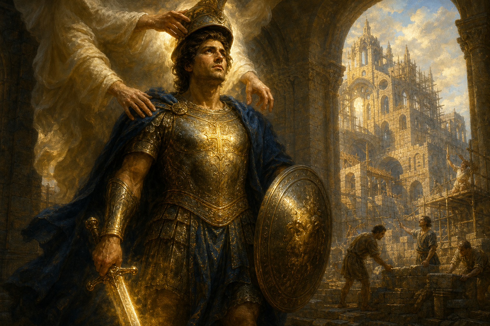

New Testament · Book 10 of 27
Ephesians
From a Roman prison, Paul describes the church as God's masterpiece, built from Jew and Gentile alike, and arms it for a battle that is spiritual rather than physical.
Writing as a prisoner for Christ, Paul opens believers' eyes to the breathtaking scope of God's plan: a people chosen before the foundation of the world, united across every former division, and equipped to stand against spiritual darkness.
For by grace are ye saved through faith; and that not of yourselves: it is the gift of God: not of works, lest any man should boast.
What happens in Ephesians
Paul begins with a sweeping blessing describing believers as chosen in Christ before the world began, redeemed through his blood, and sealed by the Holy Spirit as a guarantee of their inheritance. He prays that the Ephesians would grasp the immensity of God's power, the same power that raised Christ from the dead, before reminding them that they too were dead in sin and made alive by grace through faith, not by works. The letter's heart celebrates how Christ has broken down the wall of hostility between Jew and Gentile, creating one new people and one new temple built on the foundation of the apostles and prophets. Paul prays again for the church to grasp the breadth of Christ's love, then shifts to practical instruction: walking worthy of their calling, maintaining unity through the gifts Christ has given, putting off the old self and putting on the new, and ordering relationships within marriage, family, and work around mutual submission to Christ. The letter closes with its famous call to put on the whole armor of God, standing firm against spiritual forces of evil through truth, righteousness, faith, salvation, the word of God, and prayer.
Why it matters
Ephesians presents one of the New Testament's highest views of the church, describing it not as an afterthought but as the very centerpiece of God's eternal plan, and its teaching on salvation by grace through faith is among the clearest in Scripture. Its closing image of spiritual armor has given Christians across every generation a vocabulary for spiritual struggle.